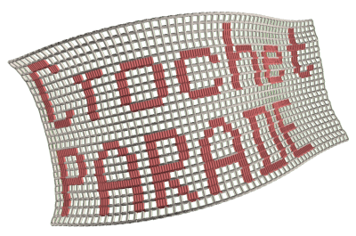

CrochetPARADE (Crochet PAttern Renderer, Analyzer, and DEbugger) is a platform that allows users to create, visualize, and analyze both 2D and 3D crochet patterns.
OVERVIEW
CrochetPARADE uses a custom language grammar that allows users to define stitches and stitch patterns. The CrochetPARADE grammar aims to ensure accuracy and precision in the crochet pattern instructions, avoiding the ambiguities encountered with instructions in plain English. The code parses and checks any user provided pattern for correctness and then creates a virtual model of the project, which is then rendered in 3D.
After rendering a pattern, users can review ('debug') the final project's shape and make adjustments. The platform identifies overly loose or tight stitches, enabling users to replace them with more suitable ones before crocheting, thus reducing the need for blocking.
CrochetPARADE's export feature allows users to export an automatically generated crochet chart of their project using standard crochet symbols. One can also export an SVG image that shows stitch connections and identifies stitches by their type, row number, and position within a row. The SVG pattern shows the same information as standard crochet diagrams and can be used as an alternative guide when crocheting. Users can also export projects to 3D files that can be imported in Blender for further manipulation and visualization.
CrochetPARADE includes interactive features such as the ability to rotate, zoom, and pan the 3D view, as well as animating the pattern creation process, which can help in visualizing how stitches attach to each other. Additional features include highlighting and hiding selected stitches, and changing yarn thickness and color. Users can access stitch information by hovering over stitches in the 3D view.
CrochetPARADE performs all calculations locally on your device, ensuring that no data is collected to a central server or transmitted over the internet. As a side effect, the platform can be sluggish on old hardware. Models of patterns involving (tens of) thousands of stitches can take minutes or more to calculate.
GOALS AND POSSIBLE APPLICATIONS
LICENSE AND COPYRIGHT
ACKNOWLEDGEMENTS
CrochetPARADE uses the following libraries: SVG.js, three.js and PrismJS.
AUTHOR
Svetlin Tassev (2023)
General shortcuts.
Shortcuts in the text input area.
Shortcuts in 3D view. To activate, click on the 3D canvas first.
| Stitch Name | Description |
|---|---|
ch |
Chain stitch, the foundation for many crochet projects |
ss |
Slip stitch, used to join rounds or move across stitches without adding height |
sc |
Single crochet, a basic stitch that creates a tight, sturdy fabric |
hdc |
Half double crochet, taller than a single crochet but shorter than a double crochet |
dc |
Double crochet, a tall stitch that creates an open, airy fabric |
tr |
Treble crochet, a very tall stitch that creates an even more open fabric |
dtr |
Double treble crochet, an extra tall stitch for very open, lacy patterns |
trtr |
Triple treble crochet, an extremely tall stitch for creating dramatic height |
rsc |
Reverse single crochet, also known as crab stitch, creates a decorative edging |
bp... (e.g., bpsc, bphdc, bpdc, bptr) |
Back post stitches, worked behind the post of the stitch below for texture |
fp... (e.g., fpsc, fphdc, fpdc, fptr) |
Front post stitches, worked around the post of the stitch below for texture |
...fl (e.g., scfl, ssfl, dcfl, hdcfl, trfl, dtrfl, trtrfl) |
Stitches worked in front loop only, creating a horizontal ridge on the back of the work |
...bl (e.g., scbl, ssbl, dcbl, hdcbl, trbl, dtrbl, trtrbl) |
Stitches worked in back loop only, creating a horizontal ridge on the front of the work |
hdcNpuff (hdc3puff, hdc4puff, hdc5puff) |
Half double crochet puff stitch made with N loops, where N is typically 3, 4, or 5 |
dcNbobble (dc3bobble, dc4bobble, dc5bobble) |
Double crochet bobble stitch made with N stitches, where N is typically 3, 4, or 5 |
tr4bobble |
Treble crochet bobble stitch made with 4 stitches |
dcNpc (dc3pc, dc4pc, dc5pc) |
N-double crochet popcorn stitch, where N is typically 3, 4, or 5 |
picot3 |
A decorative loop made with 3 chain stitches and a slip stitch |
longsc, longdc, longtr |
Long sc/dc/tr, worked into a stitch in a previous row for added height |
ring |
A magic ring, forming a circular/point-like foundation for crochet projects |
stitch_nameNinc, stitch_nameNtog |
CrochetPARADE can handle automatically stitch increases and decreases with stitch_nameNinc and stitch_nameNtog, respectively. Here N is an integer denoting the number of stitches of the increase or decrease. For example: sc2inc corresponds to two single-crochet stitches worked into the same stitch; and sc2tog implies that one is doing a decrease by combining two single-crochet stitches. |
sk |
Skip stitch, used to create spaces or shape in the pattern |
tie_up |
Special command: ties up stitches -- used to secure yarn end at end of project. |
start_at |
Special command: creates a hidden stitch used to mark the starting point of a round or row. This marks starting with a new piece of yarn at a specified location in the project. Needs to be followed by a location, e.g. start_at@[-1,0] |
start_anew |
Special command: creates a hidden stitch indicating the beginning of a new section or pattern of a disjoint piece. |
start_a_new_chain |
Special command: Begins a new chain of stitches, often used to start a new row or section of a disjoint piece. |
turn |
Special command: turn for turning the work at the end of a row or round. (See "Direction of sequential stitch attachment." for more details.) |
... |
Special command: Ellipsis (...) in the beginning of a new line indicates the previous line is continued on the current line. |
<> |
Special commands: These indicate a repetition starts/ends at that symbol. Example: 3*[sc,<,ch,>,dc] translates to [ch,dc],[sc,ch,dc],[sc,ch] |
.@~^! |
Special commands: Indicate a labeled stitch, attachment to a label/stitch, and modifiers, respectively. Example: sc.A,dc@A (see "Attachment to a label" in the Manual) |
#comment\comment\ |
Special commands: Allows inserting comments. The pound symbol indicates a comment that extends to the end of the line. Comments enclosed between backslashes can span multiple lines. |
COLOR:BACKGROUND:
| Special commands: COLOR indicates the color of the yarn that follows, while BACKGROUND - the color of the background of the 3D rendering. See the Manual for allowed colors. |
TRANSFORM_OBJECT:
| Special commands: Automatically generated by the "Object Transform" tool, which interactively allows the user to move and rotate objects. |
INDEX_ARRAY: | Special command: defines an index array that supplies counter values for an index variable used in stitch labels (for example A[k]). Typically generated by Tools → Find Project Periphery when “Save counter values as INDEX_ARRAY” is enabled. See the INDEX_ARRAY Command section in this manual. |
SORT_LABEL: | Special command: defines an explicit processing order (permutation) for stitches that share the same label without adding a counter (e.g. A, A[], A[2,3]). Recommended for periphery labeling when the periphery is a single run of adjacent stitches not necessarily sequentially crocheted (if not, an error is generated). See Labeled groups with SORT_LABEL in the Labels section of the Manual. |
DOT:
| Special commands: Any extra arguments to the physics engine. Some options that can be set here are: iterations, start, separate, inflate, learning_rate. Also, new nodes can be created and placed at particular 3D coordinates; and new connections between nodes can be specified here. See the DOT Command section in the Manual. |